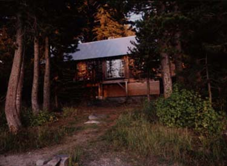

Dartmouth
of Northern California
Vox Clamantis in Sierra
|
 |
The Dartmouth Outing Club of Northern California (DOCNC) is a group of
The DOCNC was founded in 1939 with the purpose of encouraging and promoting "winter sports and all other sports, and social and recreational activities and friendly relations among the members." The cabin was built in the late 1940s using local materials, such as ties from the old railroad that crossed Donner Summit. President Dickey visited the cabin in October, 1955 to dedicate the cabin's remarkable fireplace to Ray Taylor, '11, one of the cabin's founders and the man responsible for the fireplace's New Hampshire granite!
As an alumni club, the DOCNC is loosely affiliated with the College, the Dartmouth Outing Club, and other Bay Area alumni clubs. Only graduates of
Over the past decade we've observed a general deterioration of the cabin's structure due to fierce Sierra winters and normal wear-and-tear. Our hats off to the original builders for amateur construction that lasted almost 70 years!
We've embarked upon a capital fundraising campaign, and we warmly welcome your donations. Our ultimate goal of $150,000 will cover:
- A new foundation built to local building codes: earthquake ready, rot-proof, waterproof, etc. and ready to take the cabin through 100+ years
- Replacement of two main structural beams that have rotted and been damaged by bugs
- Needed safety updates to the stone fireplace
- New industrial kitchen stove
- New kitchen flooring
- New fire safety tile around wood stove
- “Warming lamps” for the bathroom (it gets cold in there in the winter!)
- A “rainy day” fund
To learn more or to volunteer in our fundraising, please contact Susy Struble at susy(at)sourcherrytart(dot)com
Donations can be sent by check to the address listed below or by PayPal to the email account listed below. Please mark your contributions as "donation," and thank you.
Join Us!
Joining the DOCNC is pretty simple. Just send in your membership dues! Fees are $40/yearly for alumni who graduated in the last ten years, and $50 for those who graduated earlier. You can make a check out to DOCNC and mail it to:
John Kunz
913 El Cajon way
Palo Alto, CA 94393
Or you can paypal dues to the DOCNC Secretary Mary Choy at mary(at)marychoy(dot)com Our annual due schedule runs from Oct-Sept.
Please also send an email to Susy Struble at susy(at)sourcherrytart(dot)com to be added to our formal roster and to receive notices of DOCNC events and updates.
Reservations
The calendar of cabin reservations is at http://www.google.com/calendar/embed?src=choyberg%40gmail.com
Unfortunately, we are not yet capable of permitting online reservations. Instead, DOCNC members can make a reservation by contacting the DOCNC Secretary Mary Choy at 415-722-1711 or mary@marychoy.com
Note that the first two weekends of every month are available as exclusive rentals at $150 per night. Non-exclusive weekends (and weekdays except for holidays) are $20/person.
Donations & Involvement
We're always in need of funds to maintain and improve the cabin. We're also always grateful for help from someone with useful expertise, whether that be in fundraising, wood chopping, or cabinetry. Interested in getting more involved? Contact Susy Struble at susy(at)sourcherrytart(dot)com
About the Cabin
Cabin Use Information & Procedures
Required reading for all cabin users. This indispensable, comprehensive document includes information such as: how to open the lock, turn on the power, start the woodstove, and get that toilet running! Copies are available at the cabin, but we highly recommend reading these and asking questions before you go.
Parking Rules
Please be sure to get the appropriate number of parking passes from Mary Choy when you make your reservation and be sure to follow directions. Your ability to follow directions is essential to our relationship with our neighbors, including the
Well, exactly what you might think this would be.
Floorplan, features, amenities, cabin history, etc.
- Pictures of winter at the cabin (winter is our big season)
- Pictures of summer at the cabin (that being the other season....)
- A few interior shots
- Tubestock West 2000 & 2001